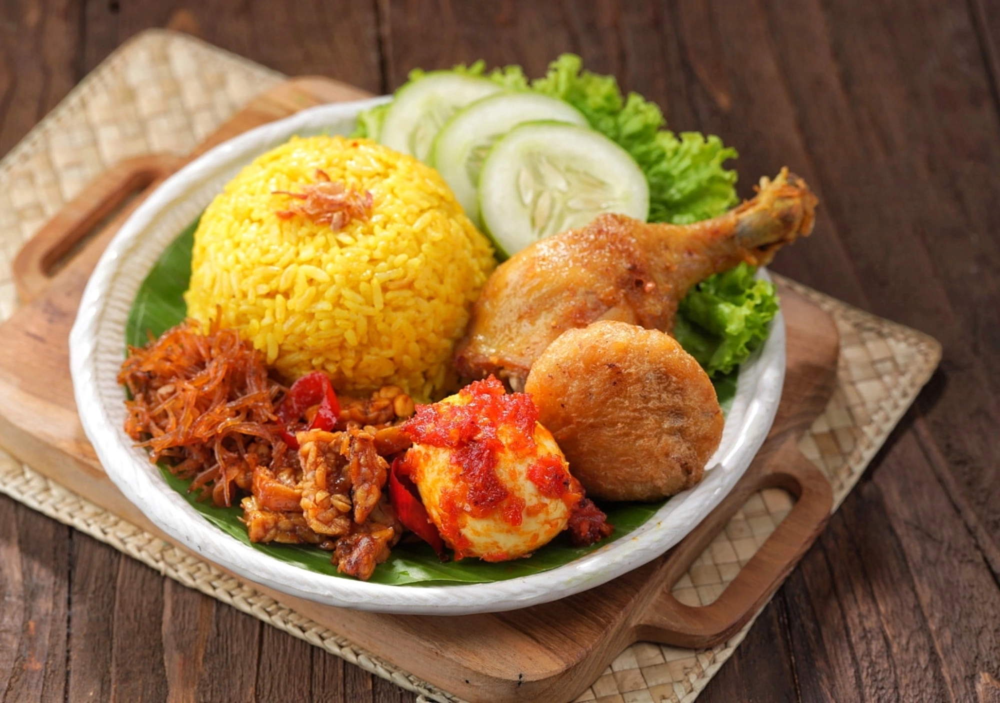
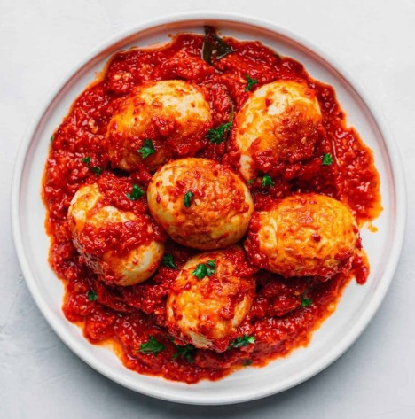
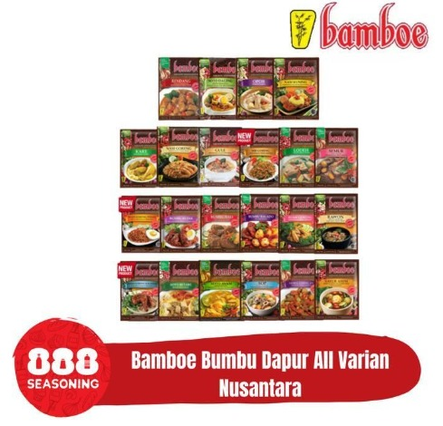

Hidup sebagai anak kos pasti membuat kita memahami satu hal penting, yaitu ruang terbatas,
alat yang sedikit, dan waktu yang sering kali terasa tidak cukup. Banyak mahasiswa rantau
hanya mengandalkan satu alat masak utama seperti rice cooker. Alat ini sederhana, tidak
memakan tempat, aman digunakan di kamar, dan tidak membutuhkan gas. Tidak heran jika rice
cooker telah menjadi simbol “dapur darurat” bagi anak kos di mana pun berada.
Namun yang sering dipertanyakan adalah, “mungkinkah memasak beragam makanan dengan alat
sesederhana itu?”. Jawabannya: sangat mungkin. Dan di sinilah Bamboe hadir sebagai solusi
yang mempermudah proses memasak.
Dalam konten video TikTok Bamboe yang menampilkan anak kos mencoba memasak berbagai menu
dengan hanya satu alat yaitu rice cooker sambil mengalami “kerusuhan kecil” seperti air
meluap, bahan nyangkut, atau ragu apakah ini akan berhasil, justru tergambar realitas yang
sangat dekat dengan kehidupan mahasiswa. Memasak itu memang penuh trial and error. Tapi
dengan bumbu yang sudah lengkap rempahnya, proses itu lebih ringan dan hasilnya lebih
terjamin.
Berikut adalah lima ide kreasi yang bisa dibuat hanya dengan rice cooker, tetap autentik,
tetap enak, dan tetap pakai bumbu favorit kita, Bamboe.
1. Nasi Kuning Rice Cooker: Wangi, Kuning Cerah, dan Siap Menghibur Hari Berat

Nasi kuning identik dengan perayaan. Namun sekarang, anak kos pun bisa merasakan kehangatan
nasi kuning tanpa perlu kompor atau banyak peralatan.
Caranya sederhana:
- Masukkan beras dan air seperti biasa.
- Tambahkan santan cair sedikit saja agar tidak cepat meluap.
- Campurkan Bumbu Nasi Kuning Bamboe.
- Aduk rata, tutup rice cooker, lalu masak sampai matang.
Hasilnya? Wangi kunyit, gurih santan, dan tekstur nasi yang lebih lembut. Cocok untuk
sarapan sebelum kuliah atau makan malam saat sedang butuh hiburan setelah hari yang
melelahkan.
2. Ayam Gulai Praktis: Rasa Kaya Rempah, Tapi Minim Ribet

Menu gulai secara tradisional membutuhkan waktu lama dan bumbu yang banyak. Untuk anak kos,
itu jelas menantang. Tapi dengan Bumbu Gule Bamboe, semua kerumitan itu dipangkas tanpa
mengurangi kekayaan rasa.
Tips memasak di rice cooker:
- Pilih potongan ayam kecil agar lebih cepat matang.
- Tambahkan air seperlunya agar kuah tidak menguap berlebihan saat mendidih.
- Masukkan sayur tambahan seperti kentang atau wortel jika ingin porsi lebih besar.
Rasanya creamy, hangat, dan aromatik. Menu ini cocok dimakan bersama nasi putih rice cooker
atau disiramkan ke nasi kuning versi anak kos.
3. Telur Balado Rice Cooker: Pedas, Merah Menggoda, dan Hemat Kantong

Balado adalah salah satu menu yang paling mudah dibuat versi ekonomis. Telur sebagai protein
utama sangat mudah ditemukan, murah, dan awet.
Cara membuat balado rice cooker:
- Rebus telur langsung di rice cooker.
- Kupas dan sisihkan.
-
Tumis sederhana dengan trik “tumis air”: campurkan Bumbu Balado Bamboe dengan sedikit air
dan minyak.
- Masukkan telur kembali dan biarkan bumbu meresap.
Hasilnya pedas, segar, dan berani. Menu yang pas untuk mahasiswa yang butuh energi tapi
sedang mengirit pengeluaran.
4. Rice Cooker Meal Combo: Masak Sekali, Makan Dua Kali
Salah satu trik yang banyak dilakukan anak kos adalah memasak untuk dua waktu makan
sekaligus. Misalnya, pagi memasak nasi kuning, lalu di atasnya diletakkan wadah kecil berisi
ayam gule atau telur balado. Model “two-level cooking” ini membuat semuanya matang
bersamaan.
Dengan bumbu Bamboe yang sudah seimbang rasanya, anak kos tinggal fokus pada proses
memasak, bukan meracik bumbu satu per satu.

Realitas, Lika-Liku, dan Kenyamanan
Dalam konten video TikTok Bamboe yang menampilkan lika-liku anak kos, terlihat gambaran
yang sangat relevan dengan fakta di lapangan: memasak itu sering tidak mulus. Rice cooker
bisa mendidih terlalu cepat, kuah bisa meluap, nasi bisa sedikit keras, telur bisa pecah.
Tapi di balik kekacauan itu, ada kepuasan tersendiri ketika akhirnya makanan jadi dan
rasanya enak.
Bamboe memahami kondisi tersebut. Itu sebabnya bumbunya dibuat untuk mempersingkat proses,
memastikan rasa tetap konsisten, dan memberi pengalaman memasak yang lebih menyenangkan,
bahkan jika kamu hanya memiliki satu alat, seperti rice cooker kesayangan.
Satu rice cooker bisa menciptakan banyak rasa. Dari nasi kuning yang wangi, ayam gule yang
kaya rempah, hingga telur balado pedas menggoda—all bisa dibuat oleh anak kos, bahkan yang
baru belajar memasak. Dengan bumbu Bamboe, prosesnya jadi lebih mudah dan hasilnya lebih
terjamin.
Memasak bukan lagi hal menakutkan. Ia adalah cara pulang, cara merayakan diri, dan cara
bertahan hidup. Dan tidak ada yang lebih menyenangkan bagi anak kos selain mengetahui
bahwa satu alat sederhana bisa membuka banyak pintu rasa.
Kebiasaan memasak cepat pun akhirnya berubah menjadi kebiasaan memasak cerdas. Banyak dari
mereka mulai menyadari bahwa memasak bukan soal kerumitan, tetapi soal membuat hidup lebih
teratur. Dengan bumbu siap pakai yang konsisten rasanya, mahasiswa tidak perlu takut
“salah bumbu”, kekhawatiran yang sangat sering muncul terutama pada perantau yang baru
belajar mandiri.
Memasak Sebagai Ruang Aman Mahasiswa Perantau
Fenomena mahasiswa menjadikan dapur kecil mereka sebagai ruang aman juga menjadi temuan
menarik dalam kampanye ini. Dalam wawancara yang dilakukan tim kampanye, banyak yang
mengaku bahwa memasak adalah salah satu cara mereka mengatasi rasa sepi sebagai perantau.
Ada yang memasak nasi kuning setiap kali rindu suasana perayaan kecil di rumah. Ada pula
yang rutin menyiapkan telur balado saat harus menyelesaikan tugas berat, karena aroma
minyak cabai memberikan energi psikologis tersendiri, seolah rumah ikut hadir walau hanya
lewat wangi tumisan.
Melalui aktivitas itu, mereka menciptakan makna baru dari memasak—bukan lagi sekadar
memenuhi kebutuhan biologis, tetapi juga kebutuhan emosional. Di sinilah nilai
human interest dari kampanye ini menguat: makanan menjadi bahasa universal yang
menghubungkan seseorang dengan memori, budaya, dan identitasnya.
Ketika satu kompor menjadi simbol ketahanan mahasiswa Indonesia, konsep “Satu Kompor,
Banyak Rasa” akhirnya menjadi lebih dari sekadar slogan kampanye. Ia berubah menjadi
simbol bagaimana generasi muda bertahan, berkreasi, dan merayakan hidup di tengah segala
keterbatasan.